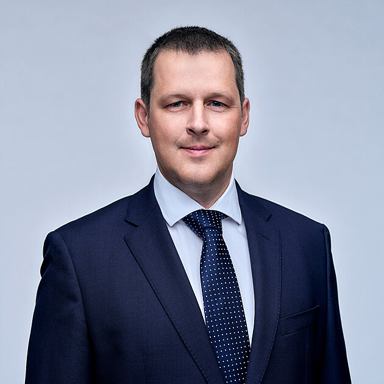
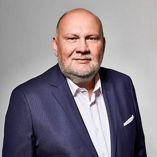
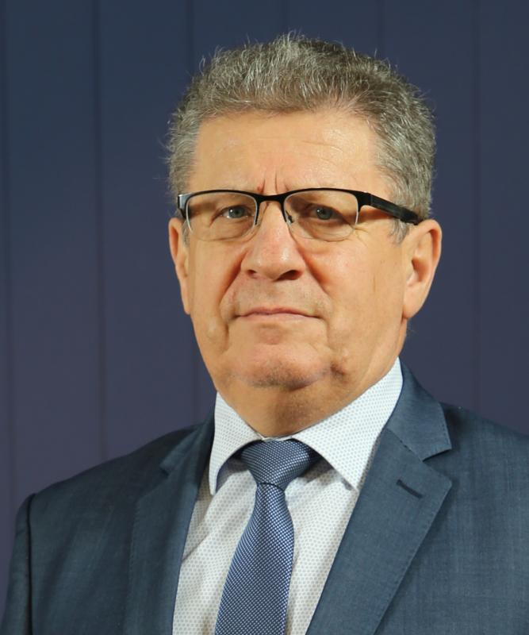
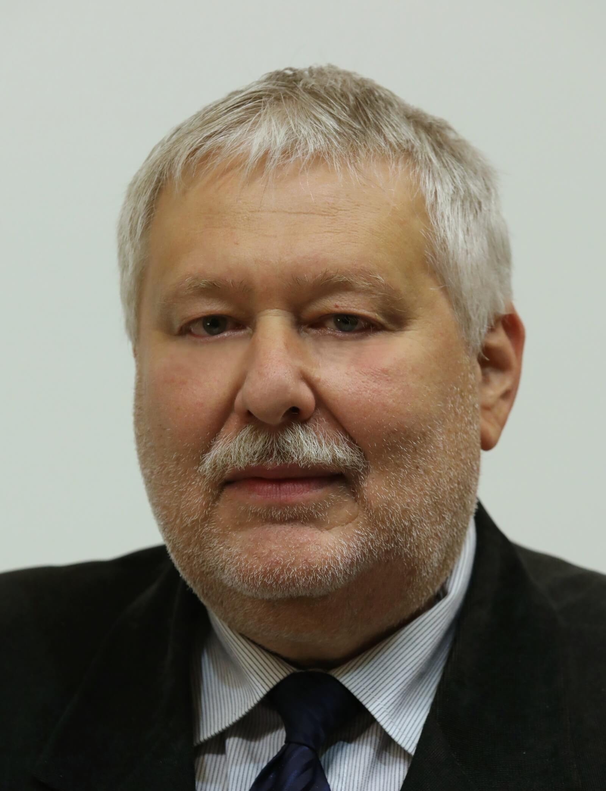

-

Ctirad Mikeš,
starosta MělníkuVynikají společnost. Tato společnost vyhrála výběrové řízení na pokládku nového asfaltu v několika ulicích. Svoji práci odvedli výborně. Povrh i po několika zimách zůstává celiství a zatím nebylo nutné ho nějak opravovat.
-
Společnost Rychlostav pro nás realizovala kompletní rekonstrukci mostu přes Zákolanský potok. Práce probíhaly bez větších komplikací a firma dodržela všechny smluvené termíny. Oceňuji především otevřenou komunikaci a rychlé řešení drobných problémů během stavby. Tým byl profesionální a choval se ohleduplně k obyvatelům v okolí. Výsledek je kvalitní a most dnes slouží bez jakýchkoliv potíží.

Libor Lesák,
starosta Kralup nad Vltavou -

František Padělek,
starosta Roudnice nad LabemRychlostav pro naše město vybudoval nový obchvat, který výrazně ulevil dopravě v centru. Od začátku projektu firma prokazovala vysokou odbornost i organizační schopnosti. Oceňuji jejich schopnost dodržet termíny i přes nepříznivé podmínky. Komunikace s radnicí i s občany byla velmi vstřícná. Jsme s výsledkem naprosto spokojeni a firmu mohu jednoznačně doporučit.
-
S firmou Rychlostav spolupracujeme na několika krajských projektech zaměřených na modernizaci silnic II. a III. třídy. Oceňuji jejich spolehlivost, efektivní organizaci práce a důraz na kvalitu. Rychlostav dokáže reagovat pružně na změny i technické komplikace. Projekty jsou vždy dokončeny včas a v požadované kvalitě. Takový přístup je ve veřejných zakázkách stále vzácnější.

Petr Borecký,
radní pro oblast dopravy a mobility ve Středočeském kraji -

Radek Löwy,
starosta LitoměřicRychlostav provedl v našem městě rozsáhlou opravu povrchů a chodníků v historickém centru. Projekt byl náročný kvůli omezenému prostoru i ochraně památkové zóny, ale firma to zvládla skvěle. Pracovníci byli profesionální, vstřícní a práce probíhaly v maximálním pořádku. Oceňuji jejich důslednost a smysl pro detail. Litoměřice mají díky tomu bezpečnější a estetičtější ulice.